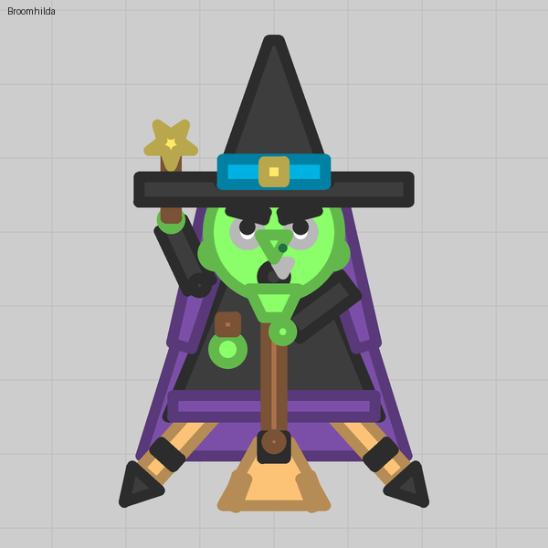
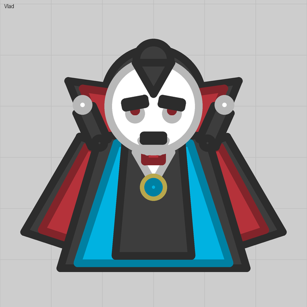

Lesson 06
A tail that swings
A turret with a narrow arc, facing backward, mostly rests; when the tank turns it lags and settles back, and anything riding it swings.
What you see
A tail that trails the turn and swishes back to centre. Capes, manes, broom twigs and dangling lanterns are all the same thing.
The trick
An auto turret only moves for a target inside its wedge. Give it Facing 180 (straight back) and a narrow Arc of about 20, and almost nothing ever enters that wedge, so the turret sits at rest. When the tank turns, the turret lags the body for a moment and settles back: the closest thing this editor has to something that flows. Mount the tail on it and hide the turret's grey disc under a part the same colour as the body.
Numbers that matter
| Field | Value | Notes |
|---|---|---|
| Facing | 180 | Away from where enemies usually are |
| Arc | 15 to 25 | Narrow enough that targets rarely pull it; 0 would let it spin freely |
| Cover | octagon Size 29 | Its inner radius (26.8) just covers a default disc of 25 |
| Base size | 25 default, or 1 | Base size 1 hides the disc without a cover |
Gotchas
- A target inside the wedge still pulls the tail toward it, and a weapon on the pivot would fire at it. For a pure decoration that is fine.
- The tail counts as one of the tank's eight auto turrets.
- A chain of pivots does not work: a turret cannot ride a turret, so a tail bends at one joint only. For a tail that really bends, see lesson 10.
Where we used it

